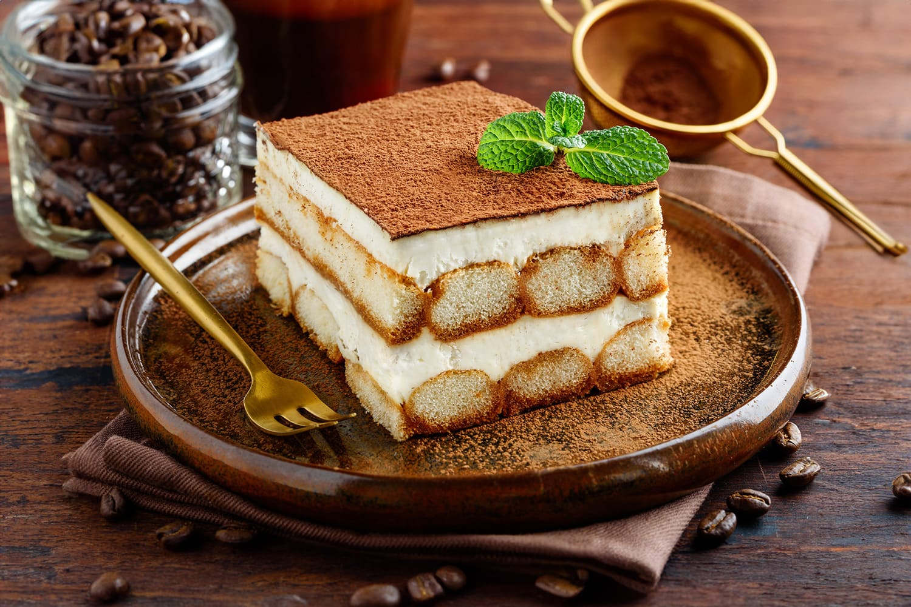

Tiramisù

Tiramisù is one of Italy’s most beloved desserts. Originating from Veneto,
it’s a rich, creamy layered dessert made with coffee-soaked ladyfingers,
mascarpone cream, and cocoa powder. Its name means “pick me up,” thanks to
the energizing mix of coffee and sugar.
Ingredients
- 300 g ladyfingers (savoiardi)
- 500 g mascarpone cheese
- 4 eggs, separated
- 100 g sugar
- 300 ml strong espresso coffee, cooled
- Unsweetened cocoa powder (for dusting)
- Dark chocolate shavings (optional)
Directions
- Prepare the espresso coffee and let it cool.
-
Whisk egg yolks with sugar until pale and creamy. Add mascarpone and mix
until smooth.
-
In a separate bowl, beat egg whites until stiff peaks form, then gently
fold into the mascarpone mixture.
-
Dip each ladyfinger quickly in the coffee (don’t soak too much) and
arrange a first layer in a dish.
-
Spread half of the mascarpone cream over the ladyfingers. Repeat with
another layer of soaked ladyfingers and the remaining cream.
-
Dust generously with cocoa powder (and add chocolate shavings if
desired).
- Chill in the fridge for at least 4 hours before serving.
Home